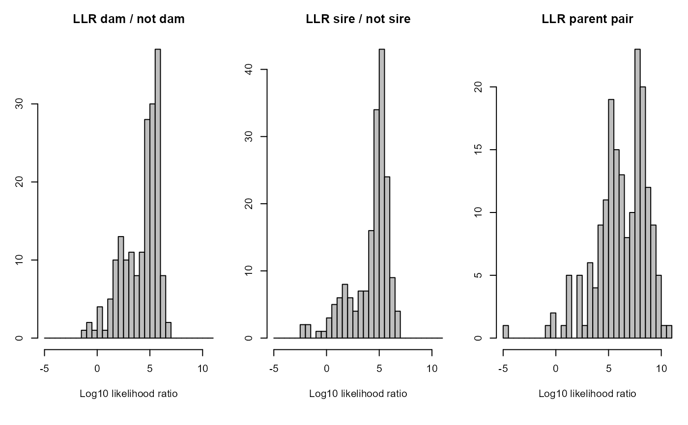
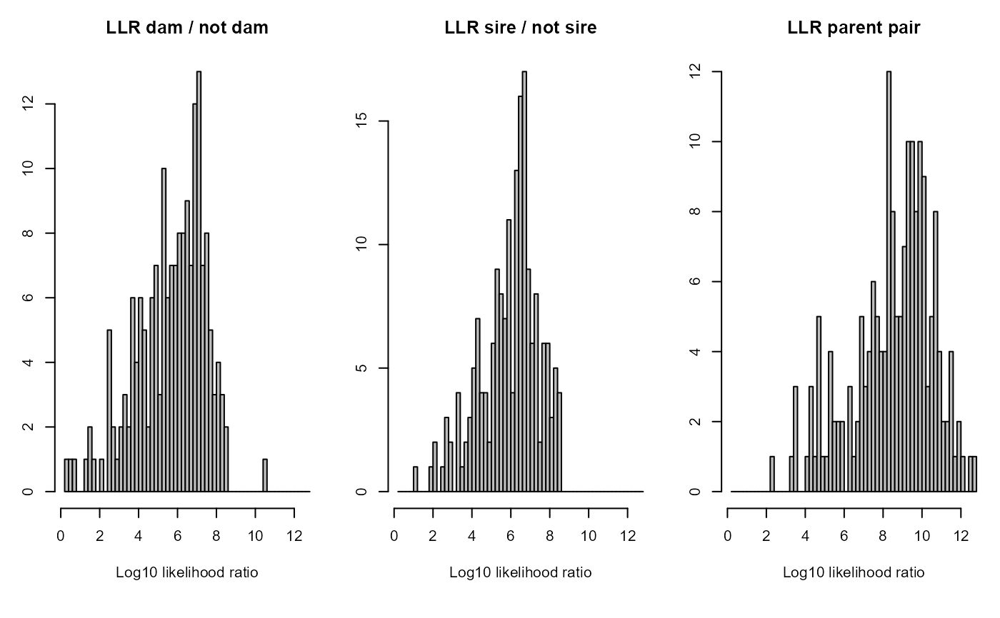
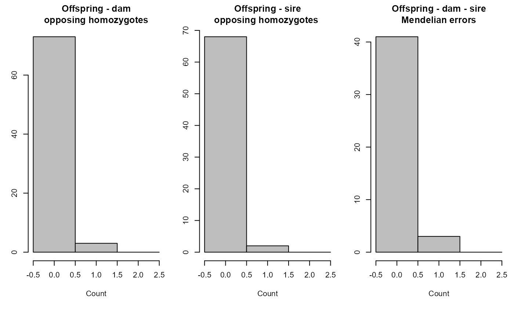
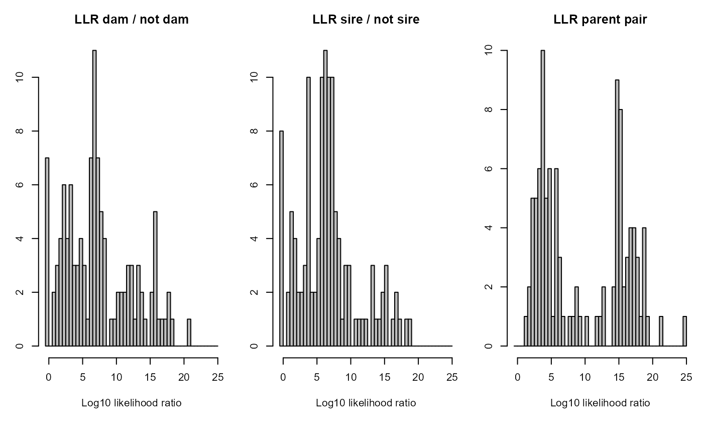

CalcOHLLR.RdCount opposite homozygous (OH) loci between parent-offspring pairs and Mendelian errors (ME) between parent-parent-offspring trios, and calculate the parental log-likelihood ratios (LLR). Also returns estimate of actual genotypes.
CalcOHLLR( Pedigree = NULL, GenoM = NULL, CalcLLR = TRUE, LifeHistData = NULL, AgePrior = FALSE, SeqList = NULL, Err = 1e-04, ErrFlavour = "version2.0", Tassign = 0.5, Tfilter = -2, Complex = "full", Herm = "no", quiet = FALSE )
| Pedigree | dataframe with columns id-dam-sire. May include
non-genotyped individuals, which will be treated as dummy individuals. If
provided, any pedigree in |
|---|---|
| GenoM | numeric matrix with genotype data: One row per individual, and
one column per SNP, coded as 0, 1, 2 or -9 (missing). See also
|
| CalcLLR | calculate log-likelihood ratios for all assigned parents
(genotyped + dummy/non-genotyped; parent vs. otherwise related). If
|
| LifeHistData | dataframe with 3 columns (optionally 5):
If the species has multiple generations per year, use an integer coding such that the candidate parents' `Birth year' is at least one smaller than their putative offspring's. Column names are ignored, so ensure column order is ID - sex - birth year (- BY.min - BY.max). Individuals do not need to be in the same order as in `GenoM', nor do all genotyped individuals need to be included. |
| AgePrior | logical ( |
| SeqList | list with output from |
| Err | estimated genotyping error rate, as a single number or 3x3 matrix. Details below. The error rate is presumed constant across SNPs, and missingness is presumed random with respect to actual genotype. |
| ErrFlavour | function that takes |
| Tassign | minimum LLR required for acceptance of proposed relationship, relative to next most likely relationship. Higher values result in more conservative assignments. Must be zero or positive. |
| Tfilter | threshold log10-likelihood ratio (LLR) between a proposed relationship versus unrelated, to select candidate relatives. Typically a negative value, related to the fact that unconditional likelihoods are calculated during the filtering steps. More negative values may decrease non-assignment, but will increase computational time. |
| Complex | Breeding system complexity. Either "full" (default), "simp" (simplified, no explicit consideration of inbred relationships), "mono" (monogamous). |
| Herm | Hermaphrodites, either "no", "A" (distinguish between dam and sire role, default if at least 1 individual with sex=4), or "B" (no distinction between dam and sire role). Both of the latter deal with selfing. |
| quiet | logical, suppress messages |
The Pedigree dataframe with additional columns:
Log10-Likelihood Ratio (LLR) of this female being the mother, versus the next most likely relationship between the focal individual and this female (see Details for relationships considered)
idem, for male parent
LLR for the parental pair, versus the next most likely configuration between the three individuals (with one or neither parent assigned)
Number of loci at which the offspring and mother are opposite homozygotes
idem, for father
Number of Mendelian errors between the offspring and the parent pair, includes OH as well as e.g. parents being opposing homozygotes, but the offspring not being a heterozygote. The offspring being OH with both parents is counted as 2 errors.
Number of SNPs scored (non-missing) for the focal individual
Number of SNPs scored (non-missing) for both individual and dam
Number of SNPs scored for both individual and sire
Sex in LifeHistData, or inferred Sex when assigned as part of parent-pair
mode of birth year probability distribution
lower limit of 95% highest density region of birth year probability distribution
higher limit
Any individual in Pedigree that does not occur in
GenoM is substituted by a dummy individual; these can be recognised
by the value 0' in columns 'SNPd.id.dam' and `SNPd.id.sire` in the output.
For non-genotyped individuals the parental log-likelihood ratio can be
calculated if they have at least one genotyped offspring (see also
getAssignCat).
The birth years in LifeHistData and the AgePrior are not used
in the calculation and do not affect the value of the likelihoods for the
various relationships, but they _are_ used during some filtering steps, and
may therefore affect the likelihood _ratio_. The default
(AgePrior=FALSE) assumes all age-relationship combinations are
possible, which may mean that some additional alternatives are considered
compared to the sequoia default, resulting in somewhat lower
LLR values.
A negative LLR for A's parent B indicates either that B is not truely the parent of A, or that B's parents are incorrect. The latter may cause B's presumed true, unobserved genotype to divert from its observed genotype, with downstream consequences for its offspring. In rare cases it may also be due to 'weird', non-implemented double or triple relationships between A and B.
SummarySeq for visualisation of OH & LLR
distributions; CalcPairLL for the likelihoods underlying the
LLR, GenoConvert to read in various genotype data formats,
CheckGeno; PedPolish to check and 'polish' the
pedigree; getAssignCat to find which id-parent pairs are both
genotyped or can be substituted by dummy individuals; sequoia
for pedigree reconstruction.
data(Ped_HSg5, SimGeno_example, LH_HSg5, package="sequoia") # count Mendelian errors in an existing pedigree Ped.OH <- CalcOHLLR(Pedigree = Ped_HSg5, GenoM = SimGeno_example, CalcLLR = FALSE)#> Counting Mendelian errors ...Ped.OH[50:55,]#> id dam sire OHdam OHsire MEpair SNPd.id SNPd.id.dam SNPd.id.sire #> 50 a01010 a00008 b00016 0 0 1 200 199 198 #> 51 b01011 a00008 b00016 0 0 1 200 199 198 #> 52 b01012 a00008 b00016 0 0 1 198 197 196 #> 53 b01013 a00011 b00001 0 0 0 199 199 199 #> 54 b01014 a00011 b00001 0 0 0 198 198 198 #> 55 b01015 a00011 b00001 0 0 1 198 198 198# Parent likelihood ratios in an existing pedigree, including for # non-genotyped parents Ped.LLR <- CalcOHLLR(Pedigree = Ped_HSg5, GenoM = SimGeno_example, CalcLLR = TRUE, LifeHistData=LH_HSg5, AgePrior=TRUE)#>#> Counting Mendelian errors ... #> Counting opposing homozygous loci between all individuals ... #> Calculating parental LLR ...# \donttest{ # likelihood ratios change with presumed genotyping error rate: Ped.LLR.B <- CalcOHLLR(Pedigree = Ped_HSg5, GenoM = SimGeno_example, CalcLLR = TRUE, LifeHistData=LH_HSg5, AgePrior=TRUE, Err = 0.005)#>#> Counting Mendelian errors ... #> Counting opposing homozygous loci between all individuals ... #> Calculating parental LLR ...# run sequoia with CalcLLR=FALSE, and add OH + LLR later: data(Ped_griffin, LH_griffin, package="sequoia") Genotypes <- SimGeno(Ped_griffin, nSnp=400) SeqOUT <- sequoia(Genotypes, LH_griffin, CalcLLR=FALSE,quiet=TRUE,Plot=FALSE) PedA <- CalcOHLLR(Pedigree = SeqOUT[["Pedigree"]][, 1:3], GenoM = Genotypes, LifeHistData = LH_griffin, AgePrior = TRUE, Complex = "full")#>#> Counting Mendelian errors ... #> Counting opposing homozygous loci between all individuals ... #> Calculating parental LLR ...# }